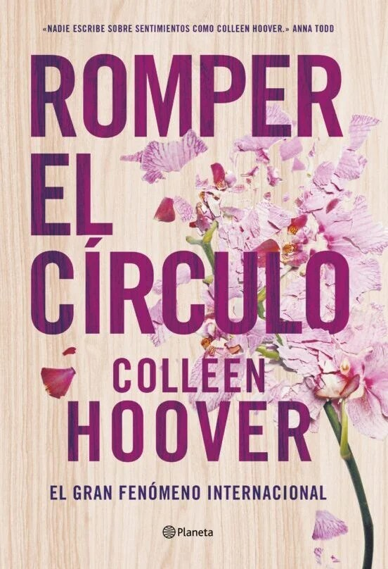
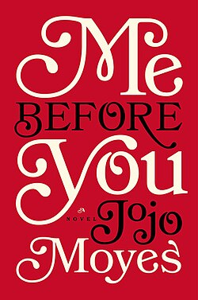
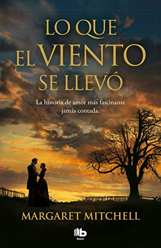
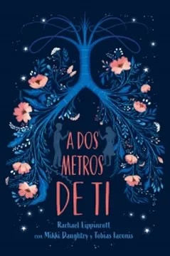

CULPA MÍA - MERCEDES RON
SINOPSIS: Nicholas Leister ha sido creado para amargarme la vida. Alto, ojos azules, pelo negro como la noche... Suena genial ¿verdad? Pues no tanto cuando te enteras de que va a ser tu hermanastro y además representa todo de lo que has estado huyendo desde que tienes uso de razón.
ROMPER EL CÍRCULO - COLLEEN HOOVER
SINOPSIS: Lily Bloom se enamora de un neurocirujano tras mudarse a Boston con el objetivo de abrir su propio negocio. Sin embargo, el primer amor de su vida retoma el contacto con ella, y Lily ahora no sabe qué hacer.

YO ANTES DE TI - JOJO MOYES
SINOPSIS: Yo antes de ti reúne a dos personas que no podrían tener menos en común en una novela conmovedoramente romántica con una pregunta: ¿Que decidirías cuando hacer feliz a la persona a la que amas significa tambien destrozarte el corazón?

LO QUE EL VIENTO SE LLEVÓ - MARGARET MITCHELL
SINOPSIS: Scarlett O'Hara, una joven de una familia adinerada de Atlanta, en el sur de los Estados Unidos, conoce una vida apacible y cómoda, llevada al ritmo de su carácter decidido y atrevido. Cuando comenzó la Guerra Civil, en 1861, su vida tal y como la conocía se derrumba y se le imponen grandes responsabilidades.

ANTES DE DICIEMBRE - JOANA MARCÚS
SINOPSIS: Para Jenna Brown, su primer año en la Universidad suponía alejarse de su familia y sus amigos y enfrentarse al mundo por primera vez en su vida. Su novio le había dejado claras sus intenciones: a partir de ese momento, tenían una relación a distancia y abierta.
A DOS METROS DE TI - RACHAEL LIPPINCOTT
SINOPSIS: Stella y Will tienen la misma enfermedad pulmonar, en el mismo hospital. Cuando se enamoran, recuperan la alegría de vivir, pero hay un problema: por el peligro de contagio, no pueden acercarse a menos de dos metros sin arriesgar sus vidas. ¿Puedes amar a alguien que no puedes tocar?
